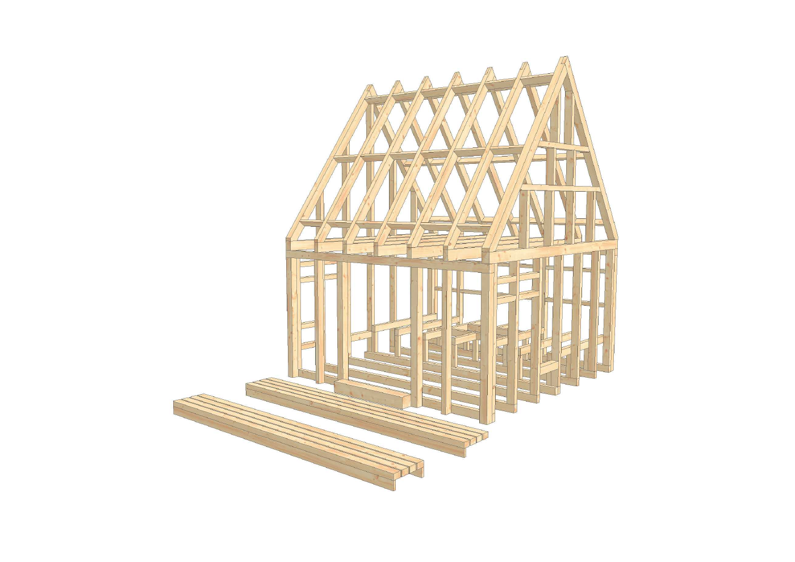
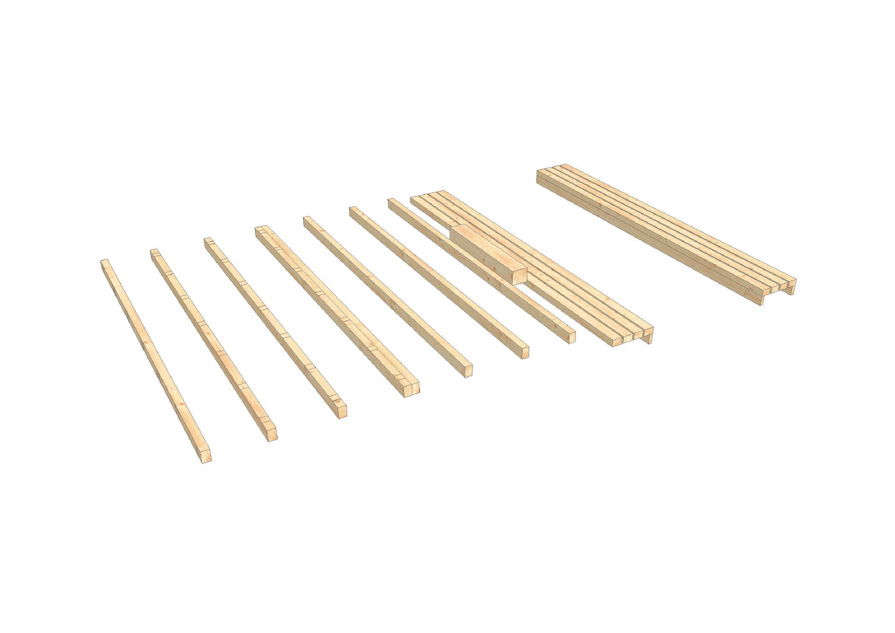
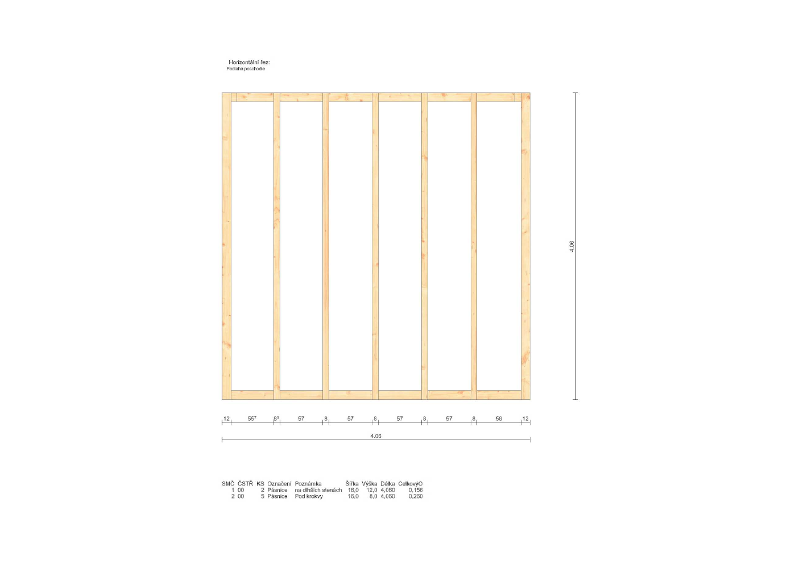
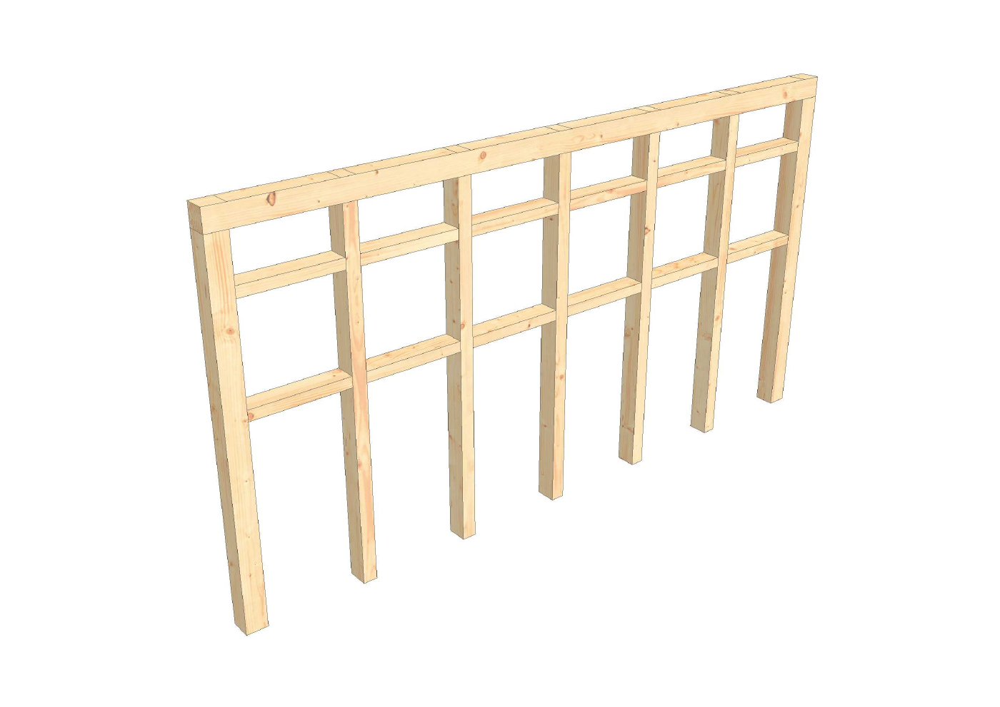

← Všetky projekty
Dielenská dokumentácia
Turistická útulňa Jozefa Maka
Výkresové spracovanie drevenej konštrukcie útulne v bukovom lese pri Mihalinovej.

Rozsah ukážky
Od celku po jednotlivé prvky.
Ukážka dielenskej dokumentácie drevenej stĺpikovej konštrukcie, krovu a stien: axonometrické pohľady, rozloženie prvkov, kótované pohľady a výkazy.
Architektonický návrh: Ing. Matthias Marcel Jean Arnould, Ing. Robert Provazník a Ing. Michaela Vatraľová. Statika: Ing. Tomáš Bačinský.
Výkresy
Technická dokumentácia




Zdroj projektu a autorstvo: Archinfo.sk ↗. Fotografia: Hikemates ↗.
Máte podobný projekt?
Pošlite podklady a dohodneme rozsah realizačných výkresov.